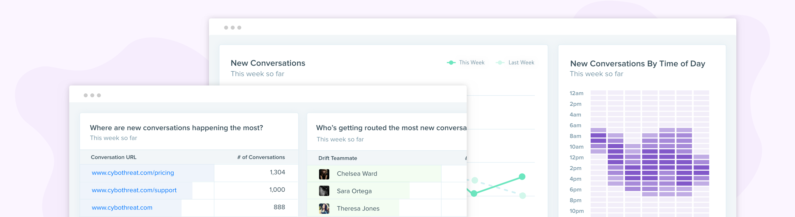

Conversational reporting
Giving admins the tools they need to monitor their team’s performance

It was the second year Drift was around, and one of our highest requested features was for reporting. It wasn’t for better reporting - it was for reporting in general. We were a conversational marketing platform, with no conversational reporting. Our customers used the product, but didn’t know whether or not it was working for them.
And so we went out to solve this customer problem:
When trying conversational marketing, I need to know what results my team is producing with Drift.
We focused on helping the admin persona of Drift - the sales and marketing managers. They care most about what’s happening at a high-level. They want to know how their team is performing, and whether or not their investment in Drift is worth it.
As the product designer on the team, my role was to design the reports, decide where they should live in the app, and test the designs. I also worked closely with my Product Manager researching what reports to design as well. The team was made up of a Product Manager, Product Designer, Tech Lead, Front End and Back End engineer.
The biggest challenge was uncovering what admins cared about. Because we were starting from scratch, we needed to really understand the problem we were solving. We had to stay humble and approach our assumptions for what they were - assumptions.
Going to be honest, the other big challenge was the actual data visualization design. How could we visually display data that is easily understandable in just a couple of seconds? We did a lot of testing, whiteboarding, and iterations to get it right.
My PM and I talked to 8 customers and our sales leaders to understand what metrics customers really valued, and more importantly - how they would plan on using them. If you have numbers but no use for them, then they’re vanity metrics. We found that our team was spending 2 hours each week pulling Drift data manually to create reports for customers. 😲
I turned the wireframes into visual designs that were ready to be tested. I ran user tests with 3 matching personas at Drift (marketer, CSM, sales manager) and 3 external customers. It went quite well! Pulled out a lot of learnings and iterated on the designs to incorporate them..
This story was a monthly Marketable Moment, so the company made a lot of noise around it. Here’s the blogpost that introduces this feature and some happy customers.